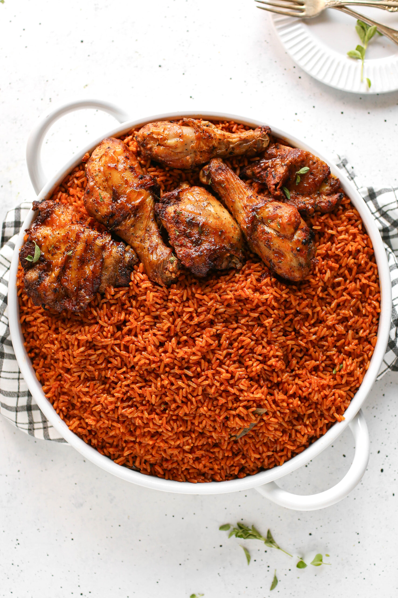

Jollof Rice
Home

About Jollof Rice
No party or gathering in West Africa is complete without a rich, vibrate pot of smoky Jollof Rice! known for its deep reddish orange color and irresistible aroma, this iconic rice dish is the ultimate crowd-pleaser.
Parboiled long-grain rice is simmered in a flavorful pepper mix made of blended tomatoes, red bell peppers, onions, and scotch bonnets, all enriched with rich meat stock and fragrant local spices.
The joy of Jollof is not only for the rich, it is a dish for everyone. From bustling street corners to lavish wedding receptions, this versatile meal brings everyone to the table with a shared love for great food. If you haven’t experienced the mouth watering magic of a perfectly seasoned, smoky plate of Jollof rice yet, you are seriously missing out! Grab your apron, step into the kitchen, and let’s make a batch that will have you hooked from the very first bite.
Ingredients
- Long-grain parboiled rice
- Fresh tomatoes, red bell peppers (tatashe), and scotch bonnet peppers (atarodo)
- Onions (sliced and blended)
- Tomato paste
- Vegetable oil
- Chicken or beef stock
- Seasoning cubes and salt (to taste)
- Thyme, curry powder, and bay leaves
- Butter (optional, for extra shine)
Steps to Prepare
- Blend your fresh tomatoes, red bell peppers, scotch bonnets, and onions together until smooth, then boil the mixture down to remove excess water.
- Heat vegetable oil in a pot, add sliced onions, and fry your tomato paste for a few minutes to reduce acidity.
- Pour in the reduced pepper blend and fry on medium heat until the oil separates from the stew.
- Add your chicken or beef stock, curry powder, thyme, bay leaves, seasoning cubes, and salt. Stir well and bring to a boil.
- Rinse your parboiled rice thoroughly and pour it into the boiling stew. The liquid level should just cover the top of the rice.
- Cover the pot tightly with aluminum foil or a tight lid, turn the heat down to low, and let the rice steam in its own heat until tender and smoky.
- Stir in a tablespoon of butter and fresh onion rings, turn off the heat, and serve hot with fried chicken or plantains!